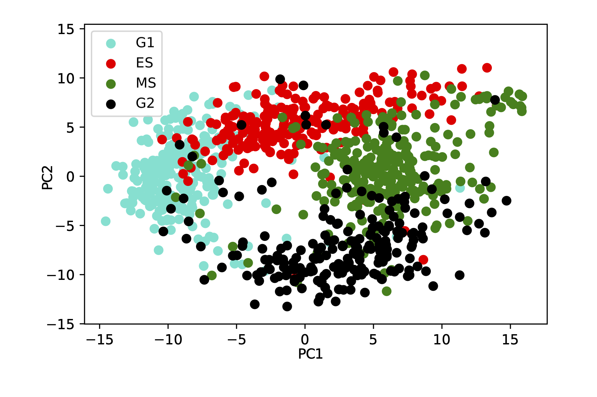
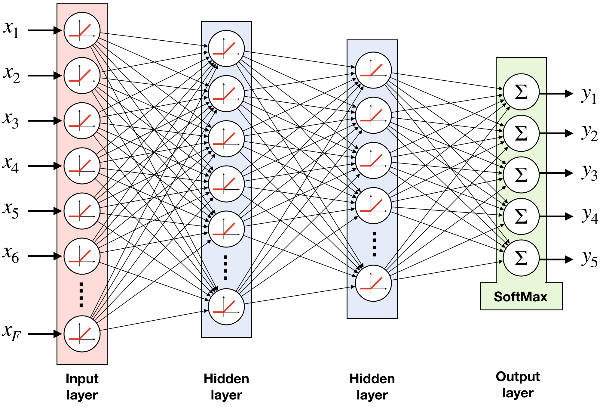
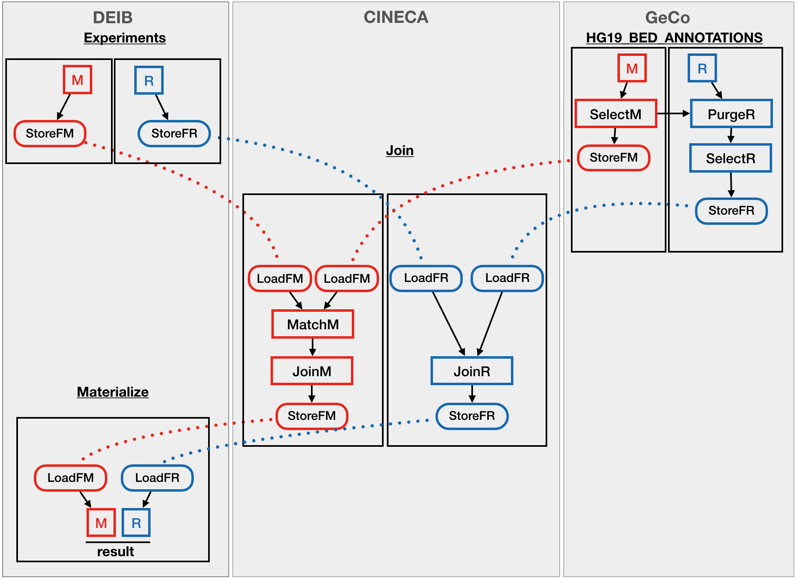
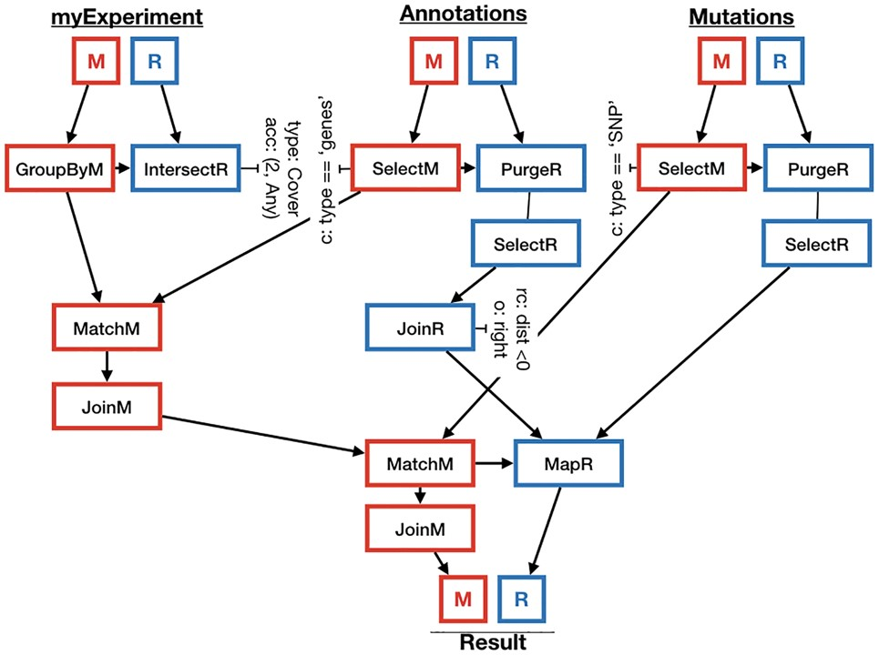
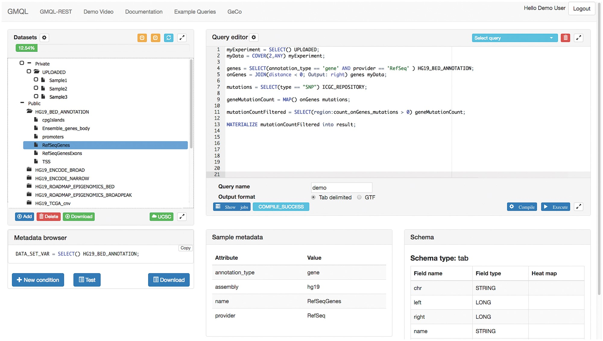
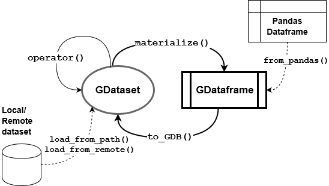
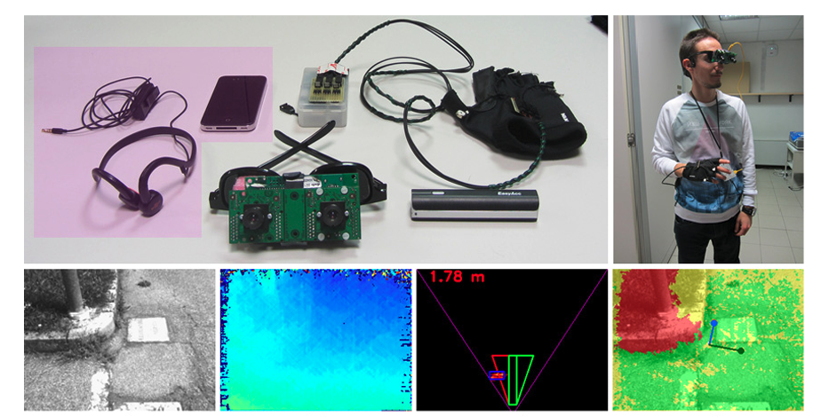

Publications
1. Computational biology
2023
-
Whole-genome doubling drives oncogenic loss of chromatin segregationLambuta, Ruxandra A., Nanni, Luca, Liu, Yuanlong, Diaz-Miyar, Juan, Iyer, Arvind, Tavernari, Daniele, Katanayeva, Natalya, Ciriello, Giovanni, and Oricchio, ElisaNature 2023
Whole-genome doubling (WGD) is a recurrent event in human cancers and it promotes chromosomal instability and acquisition of aneuploidies1–8. However, the three-dimensional organization of chromatin in WGD cells and its contribution to oncogenic phenotypes are currently unknown. Here we show that in p53-deficient cells, WGD induces loss of chromatin segregation (LCS). This event is characterized by reduced segregation between short and long chromosomes, A and B subcompartments and adjacent chromatin domains. LCS is driven by the downregulation of CTCF and H3K9me3 in cells that bypassed activation of the tetraploid checkpoint. Longitudinal analyses revealed that LCS primes genomic regions for subcompartment repositioning in WGD cells. This results in chromatin and epigenetic changes associated with oncogene activation in tumours ensuing from WGD cells. Notably, subcompartment repositioning events were largely independent of chromosomal alterations, which indicates that these were complementary mechanisms contributing to tumour development and progression. Overall, LCS initiates chromatin conformation changes that ultimately result in oncogenic epigenetic and transcriptional modifications, which suggests that chromatin evolution is a hallmark of WGD-driven cancer.
@article{lambutaNanni2023, bibtex_show = {true}, title = {Whole-genome doubling drives oncogenic loss of chromatin segregation}, journal = {Nature}, author = {Lambuta, Ruxandra A. and Nanni, Luca and Liu, Yuanlong and Diaz-Miyar, Juan and Iyer, Arvind and Tavernari, Daniele and Katanayeva, Natalya and Ciriello, Giovanni and Oricchio, Elisa}, issn = {1476-4687}, html = {https://doi.org/10.1038/s41586-023-05794-2}, doi = {10.1038/s41586-023-05794-2}, year = {2023}, category = {1. Computational biology}, code = {https://github.com/CSOgroup/WGD}, image = {https://media.springernature.com/full/springer-static/image/art%3A10.1038%2Fs41586-023-05794-2/MediaObjects/41586_2023_5794_Fig1_HTML.png?as=webp} }
2022
-
Computational Inference of DNA Folding Principles: From Data Management to Machine LearningNanni, LucaIn Special Topics in Information Technology 2022
DNA is the molecular basis of life and would total about three meters if linearly untangled. To fit in the cell nucleus at the micrometer scale, DNA has, therefore, to fold itself into several layers of hierarchical structures, which are thought to be associated with functional compartmentalization of genomic features like genes and their regulatory elements. For this reason, understanding the mechanisms of genome folding is a major biological research problem. Studying chromatin conformation requires high computational resources and complex data analyses pipelines. In this chapter, we first present the PyGMQL software for interactive and scalable data exploration for genomic data. PyGMQL allows the user to inspect genomic datasets and design complex analysis pipelines. The software presents itself as a easy-to-use Python library and interacts seamlessly with other data analysis packages. We then use the software for the study of chromatin conformation data. We focus on the epigenetic determinants of Topologically Associating Domains (TADs), which are region of high self chromatin interaction. The results of this study highlight the existence of a “grammar of genome folding” which dictates the formation of TADs and boundaries, which is based on the CTCF insulator protein. Finally we focus on the relationship between chromatin conformation and gene expression, designing a graph representation learning model for the prediction of gene co-expression from gene topological features obtained from chromatin conformation data. We demonstrate a correlation between chromatin topology and co-expression, shedding a new light on this debated topic and providing a novel computational framework for the study of co-expression networks.
@inproceedings{Nanni2022, bibtex_show = {true}, author = {Nanni, Luca}, editor = {Piroddi, Luigi}, title = {Computational Inference of DNA Folding Principles: From Data Management to Machine Learning}, booktitle = {Special Topics in Information Technology}, year = {2022}, publisher = {Springer International Publishing}, address = {Cham}, pages = {79--88}, isbn = {978-3-030-85918-3}, doi = {10.1007/978-3-030-85918-3_7}, html = {https://doi.org/10.1007/978-3-030-85918-3_7}, category = {1. Computational biology}, image = {https://media.springernature.com/full/springer-static/image/chp%3A10.1007%2F978-3-030-85918-3_7/MediaObjects/517345_1_En_7_Fig2_HTML.png?as=webp} }
2021
-
Ensemble Feature Selection for Single Cell Chromatin Conformation AnalysisRouhi, Amirreza, Nanni, Luca, Canakoglu, Arif, Pinoli, Pietro, and Ceri, StefanoIn 2021 13th International Conference on Bioinformatics and Biomedical Technology 2021
High-throughput Chromosome Conformation Capture (HI-C) highlights pairwise interactions in the genome; they are used for progressively understanding relevant genetic and epigenetic properties, including the discovery of chromosome compartments and topological associating domains. Single-cell Hi-C (scHi-C) extends the single-cell approach, initially focused on transcriptomics, to the Hi-C protocol; it allows measuring 3D chromatin conformation in individual cells. Large scHi-C datasets present significant data analysis challenges, due to redundancy, noise, and nonlinearity. In this work, we propose a pipeline for analysing scHi-C datasets; along the pipeline, we use new/improved methods. We initially use directionality indexes to reduce data sparsity, then we use three distinct methods for feature selection, followed by ensemble methods to merge them. We demonstrate the effectiveness of this pipeline by comparing the accuracy of classifiers which are built by using just the top-quality features selected by our method, and show that a small number of features provides good classification performance in two different contexts, the prediction of cell cycle stages and the identification of cell lines. We use a deep learning method for cell classification. The genomic locations selected by our ensemble method provide high general predictive power in both tasks, and outperform features selected by single methods. This demonstrates that multiple feature scoring strategies are necessary to clearly highlight differential genomic regions between cell classes.
@inproceedings{10.1145/3473258.3473290, bibtex_show = {true}, author = {Rouhi, Amirreza and Nanni, Luca and Canakoglu, Arif and Pinoli, Pietro and Ceri, Stefano}, title = {Ensemble Feature Selection for Single Cell Chromatin Conformation Analysis}, year = {2021}, isbn = {9781450389655}, publisher = {Association for Computing Machinery}, address = {New York, NY, USA}, html = {https://doi.org/10.1145/3473258.3473290}, booktitle = {2021 13th International Conference on Bioinformatics and Biomedical Technology}, pages = {209–216}, numpages = {8}, category = {1. Computational biology}, image = {../assets/img/Rouhi_et_al_2021.png} } -
Systematic inference and comparison of multi-scale chromatin sub-compartments connects spatial organization to cell phenotypesLiu, Yuanlong, Nanni, Luca, Sungalee, Stephanie, Zufferey, Marie, Tavernari, Daniele, Mina, Marco, Ceri, Stefano, Oricchio, Elisa, and Ciriello, GiovanniNature communications 2021
Chromatin compartmentalization reflects biological activity. However, inference of chromatin sub-compartments and compartment domains from chromosome conformation capture (Hi-C) experiments is limited by data resolution. As a result, these have been characterized only in a few cell types and systematic comparisons across multiple tissues and conditions are missing. Here, we present Calder, an algorithmic approach that enables the identification of multi-scale sub-compartments at variable data resolution. Calder allows to infer and compare chromatin sub-compartments and compartment domains in >100 cell lines. Our results reveal sub-compartments enriched for poised chromatin states and undergoing spatial repositioning during lineage differentiation and oncogenic transformation.
@article{liu2021systematic, bibtex_show = {true}, title = {Systematic inference and comparison of multi-scale chromatin sub-compartments connects spatial organization to cell phenotypes}, author = {Liu, Yuanlong and Nanni, Luca and Sungalee, Stephanie and Zufferey, Marie and Tavernari, Daniele and Mina, Marco and Ceri, Stefano and Oricchio, Elisa and Ciriello, Giovanni}, journal = {Nature communications}, volume = {12}, number = {1}, pages = {1--11}, year = {2021}, publisher = {Nature Publishing Group}, html = {https://doi.org/10.1038/s41467-021-22666-3}, category = {1. Computational biology}, code = {https://github.com/CSOgroup/CALDER2}, image = {https://media.springernature.com/full/springer-static/image/art%3A10.1038%2Fs41467-021-22666-3/MediaObjects/41467_2021_22666_Fig1_HTML.png?as=webp} }
2020
-
Investigating deep learning based breast cancer subtyping using pan-cancer and multi-omic dataCristovao, Francisco, Cascianelli, Silvia, Canakoglu, Arif, Carman, Mark, Nanni, Luca, Pinoli, Pietro, and Masseroli, MarcoIEEE/ACM Transactions on Computational Biology and Bioinformatics 2020
Breast Cancer comprises multiple subtypes implicated in prognosis. Existing stratification methods rely on the expression quantification of small gene sets. Next Generation Sequencing promises large amounts of omic data in the next years. In this scenario, we explore the potential of machine learning and, particularly, deep learning for breast cancer subtyping. Due to the paucity of publicly available data, we leverage on pan-cancer and non-cancer data to design semi-supervised settings. We make use of multi-omic data, including microRNA expressions and copy number alterations, and we provide an in-depth investigation of several supervised and semi-supervised architectures. Obtained accuracy results show simpler models to perform at least as well as the deep semi-supervised approaches on our task over gene expression data. When multi-omic data types are combined together, performance of deep models shows little (if any) improvement in accuracy, indicating the need for further analysis on larger datasets of multi-omic data as and when they become available. From a biological perspective, our linear model mostly confirms known gene-subtype annotations. Conversely, deep approaches model non-linear relationships, which is reflected in a more varied and still unexplored set of representative omic features that may prove useful for breast cancer subtyping.
@article{cristovao2020investigating, bibtex_show = {true}, title = {Investigating deep learning based breast cancer subtyping using pan-cancer and multi-omic data}, author = {Cristovao, Francisco and Cascianelli, Silvia and Canakoglu, Arif and Carman, Mark and Nanni, Luca and Pinoli, Pietro and Masseroli, Marco}, journal = {IEEE/ACM Transactions on Computational Biology and Bioinformatics}, year = {2020}, publisher = {IEEE}, html = {https://doi.org/10.1109/TCBB.2020.3042309}, category = {1. Computational biology}, code = {https://github.com/DEIB-GECO/brca_subtyping}, image = {../assets/img/Cristovao_et_al_2020.png} } -
Exploring chromatin conformation and gene co-expression through graph embeddingVarrone, Marco, Nanni, Luca, Ciriello, Giovanni, and Ceri, StefanoBioinformatics 2020
Motivation. The relationship between gene co-expression and chromatin conformation is of great biological interest. Thanks to high-throughput chromosome conformation capture technologies (Hi-C), researchers are gaining insights on the tri-dimensional organization of the genome. Given the high complexity of Hi-C data and the difficult definition of gene co-expression networks, the development of proper computational tools to investigate such relationship is rapidly gaining the interest of researchers. One of the most fascinating questions in this context is how chromatin topology correlates with gene co-expression and which physical interaction patterns are most predictive of co-expression relationships. Results.To address these questions, we developed a computational framework for the prediction of co-expression networks from chromatin conformation data. We first define a gene chromatin interaction network where each gene is associated to its physical interaction profile; then, we apply two graph embedding techniques to extract a low-dimensional vector representation of each gene from the interaction network; finally, we train a classifier on gene embedding pairs to predict if they are co-expressed. Both graph embedding techniques outperform previous methods based on manually designed topological features, highlighting the need for more advanced strategies to encode chromatin information. We also establish that the most recent technique, based on random walks, is superior. Overall, our results demonstrate that chromatin conformation and gene regulation share a non-linear relationship and that gene topological embeddings encode relevant information, which could be used also for downstream analysis. Availability and implementation. The source code for the analysis is available at: https://github.com/marcovarrone/gene-expression-chromatin.
@article{varrone2020exploring, bibtex_show = {true}, title = {Exploring chromatin conformation and gene co-expression through graph embedding}, author = {Varrone, Marco and Nanni, Luca and Ciriello, Giovanni and Ceri, Stefano}, journal = {Bioinformatics}, volume = {36}, number = {Supplement\_2}, pages = {i700--i708}, year = {2020}, publisher = {Oxford University Press}, html = {https://doi.org/10.1093/bioinformatics/btaa803}, category = {1. Computational biology}, code = {https://github.com/marcovarrone/gene-expression-chromatin}, image = {https://github.com/marcovarrone/gene-expression-chromatin/blob/master/pipeline.png?raw=true} }
-
Spatial patterns of CTCF sites define the anatomy of TADs and their boundariesNanni, Luca, Ceri, Stefano, and Logie, ColinGenome biology 2020
Background. Topologically associating domains (TADs) are genomic regions of self-interaction. Additionally, it is known that TAD boundaries are enriched in CTCF binding sites. In turn, CTCF sites are known to be asymmetric, whereby the convergent configuration of a pair of CTCF sites leads to the formation of a chromatin loop in vivo. However, to date, it has been unclear how to reconcile TAD structure with CTCF-based chromatin loops. Results. We approach this problem by analysing CTCF binding site strengths and classifying clusters of CTCF sites along the genome on the basis of their relative orientation. Analysis of CTCF site orientation classes as a function of their spatial distribution along the human genome reveals that convergent CTCF site clusters are depleted while divergent CTCF clusters are enriched in the 5- to 100-kb range. We then analyse the distribution of CTCF binding sites as a function of TAD boundary conservation across seven primary human blood cell types. This reveals divergent CTCF site enrichment at TAD boundaries. Furthermore, convergent arrays of CTCF sites separate the left and right sections of TADs that harbour internal CTCF sites, resulting in unequal TAD ‘halves’. Conclusions. The orientation-based CTCF binding site cluster classification that we present reconciles TAD boundaries and CTCF site clusters in a mechanistically elegant fashion. This model suggests that the emergent structure of nuclear chromatin in the form of TADs relies on the obligate alternation of divergent and convergent CTCF site clusters that occur at different length scales along the genome.
@article{nanni2020spatial, bibtex_show = {true}, title = {Spatial patterns of CTCF sites define the anatomy of TADs and their boundaries}, author = {Nanni, Luca and Ceri, Stefano and Logie, Colin}, journal = {Genome biology}, volume = {21}, number = {1}, pages = {1--25}, year = {2020}, publisher = {BioMed Central}, html = {https://doi.org/10.1186/s13059-020-02108-x}, category = {1. Computational biology}, image = {https://media.springernature.com/lw685/springer-static/image/art%3A10.1186%2Fs13059-020-02108-x/MediaObjects/13059_2020_2108_Figa_HTML.png?as=webp}, code = {https://github.com/lucananni93/CTCF_Spatial_Patterns} }
2019
-
Evaluating Deep Semi-supervised Learning for Whole-Transcriptome Breast Cancer SubtypingCascianelli, Silvia, Cristovao, Francisco, Canakoglu, Arif, Carman, Mark, Nanni, Luca, Pinoli, Pietro, and Masseroli, MarcoIn International Meeting on Computational Intelligence Methods for Bioinformatics and Biostatistics 2019
We investigate the important clinical problem of predicting prognosis-related breast cancer molecular subtypes using whole-transcriptome information present in The Cancer Genome Atlas Project (TCGA) dataset. From a Machine Learning perspective, the data is both high-dimensional with over nineteen thousand features, and extremely small with only about one thousand labeled instances in total. To deal with the dearth of information we compare classical, deep and semi-supervised learning approaches on the subtyping task. Specifically, we compare a L1-regularized Logistic Regression, a 2-hidden layer Feed Forward Neural Network and a Variational Autoencoder based semi-supervised learner that makes use of pan-cancer TCGA data as well as normal breast tissue data from a second source. We find that the classical supervised technique performs at least as well as the deep and semi-supervised learning approaches, although learning curve analysis suggests that insufficient unlabeled data may be being provided for the chosen semi-supervised learning technique to be effective
@inproceedings{cascianelli2019evaluating, bibtex_show = {true}, title = {Evaluating Deep Semi-supervised Learning for Whole-Transcriptome Breast Cancer Subtyping}, author = {Cascianelli, Silvia and Cristovao, Francisco and Canakoglu, Arif and Carman, Mark and Nanni, Luca and Pinoli, Pietro and Masseroli, Marco}, booktitle = {International Meeting on Computational Intelligence Methods for Bioinformatics and Biostatistics}, pages = {232--244}, year = {2019}, organization = {Springer}, html = {https://doi.org/10.1007/978-3-030-63061-4_21}, category = {1. Computational biology}, code = {https://github.com/DEIB-GECO/brca_subtype}, image = {https://media.springernature.com/m312/springer-static/image/chp%3A10.1007%2F978-3-030-63061-4_21/MediaObjects/495715_1_En_21_Fig2_HTML.png?as=webp} }
-
Extensive epigenomic integration of the glucocorticoid response in primary human monocytes and in vitro derived macrophagesWang, Cheng, Nanni, Luca, Novakovic, Boris, Megchelenbrink, Wout, Kuznetsova, Tatyana, Stunnenberg, Hendrik G, Ceri, Stefano, and Logie, ColinScientific reports 2019
Glucocorticoid receptor is a transcription factor that is ubiquitously expressed. Glucocorticoids are circadian steroids that regulate a wide range of bodily functions, including immunity. Here we report that synthetic glucocorticoids affect 1035 mRNAs in isolated healthy human blood monocytes but only 165 in the respective six day-old monocyte-derived macrophages. The majority of the glucocorticoid response in monocytes concerns genes that are dynamic upon monocyte to macrophage differentiation, whereby macrophage-like mRNA levels are often reached in monocytes within four hours of treatment. Concomitantly, over 5000 chromosomal H3K27ac regions undergo remodelling, of which 60% involve increased H3K27ac signal. We find that chromosomal glucocorticoid receptor binding sites correlate with positive but not with negative local epigenomic effects. To investigate further we assigned our data to topologically associating domains (TADs). This shows that about 10% of macrophage TADs harbour at least one GR binding site and that half of all the glucocorticoid-induced H3K27ac regions are confined to these TADs. Our analyses are therefore consistent with the notion that TADs naturally accommodate information from sets of distal glucocorticoid response elements.
@article{wang2019extensive, bibtex_show = {true}, title = {Extensive epigenomic integration of the glucocorticoid response in primary human monocytes and in vitro derived macrophages}, author = {Wang, Cheng and Nanni, Luca and Novakovic, Boris and Megchelenbrink, Wout and Kuznetsova, Tatyana and Stunnenberg, Hendrik G and Ceri, Stefano and Logie, Colin}, journal = {Scientific reports}, volume = {9}, number = {1}, pages = {1--17}, year = {2019}, publisher = {Nature Publishing Group}, html = {https://doi.org/10.1038/s41598-019-39395-9}, category = {1. Computational biology}, image = {https://media.springernature.com/full/springer-static/image/art%3A10.1038%2Fs41598-019-39395-9/MediaObjects/41598_2019_39395_Fig6_HTML.png?as=webp} }
2018
-
Designing and evaluating deep learning models for cancer detection on gene expression dataCanakoglu, Arif, Nanni, Luca, Sokolovsky, Artur, and Ceri, StefanoIn International meeting on computational intelligence methods for bioinformatics and biostatistics 2018
Transcription profiling enables researchers to understand the activity of the genes in various experimental conditions; in human genomics, abnormal gene expression is typically correlated with clinical conditions. An important application is the detection of genes which are most involved in the development of tumors, by contrasting normal and tumor cells of the same patient. Several statistical and machine learning techniques have been applied to cancer detection; more recently, deep learning methods have been attempted, but they have typically failed in meeting the same performance as classical algorithms. In this paper, we design a set of deep learning methods that can achieve similar performance as the best machine learning methods thanks to the use of external information or of data augmentation; we demonstrate this result by comparing the performance of new methods against several baselines.
@inproceedings{canakoglu2018designing, bibtex_show = {true}, title = {Designing and evaluating deep learning models for cancer detection on gene expression data}, author = {Canakoglu, Arif and Nanni, Luca and Sokolovsky, Artur and Ceri, Stefano}, booktitle = {International meeting on computational intelligence methods for bioinformatics and biostatistics}, pages = {249--261}, year = {2018}, organization = {Springer}, html = {https://doi.org/10.1007/978-3-030-34585-3_22}, category = {1. Computational biology}, code = {https://github.com/DEIB-GECO/cancer_classification}, image = {https://media.springernature.com/m312/springer-static/image/chp%3A10.1007%2F978-3-030-34585-3_22/MediaObjects/482316_1_En_22_Fig3_HTML.png?as=webp} }
2. Bioinformatics
2021
-
Federated sharing and processing of genomic datasets for tertiary data analysisCanakoglu, Arif, Pinoli, Pietro, Gulino, Andrea, Nanni, Luca, Masseroli, Marco, and Ceri, StefanoBriefings in Bioinformatics 2021
Motivation. With the spreading of biological and clinical uses of next-generation sequencing (NGS) data, many laboratories and health organizations are facing the need of sharing NGS data resources and easily accessing and processing comprehensively shared genomic data; in most cases, primary and secondary data management of NGS data is done at sequencing stations, and sharing applies to processed data. Based on the previous single-instance GMQL system architecture, here we review the model, language and architectural extensions that make the GMQL centralized system innovatively open to federated computing. Results. A well-designed extension of a centralized system architecture to support federated data sharing and query processing. Data is federated thanks to simple data sharing instructions. Queries are assigned to execution nodes; they are translated into an intermediate representation, whose computation drives data and processing distributions. The approach allows writing federated applications according to classical styles: centralized, distributed or externalized. Availability. The federated genomic data management system is freely available for non-commercial use as an open source project at http://www.bioinformatics.deib.polimi.it/FederatedGMQLsystem/
@article{canakoglu2021federated, bibtex_show = {true}, title = {Federated sharing and processing of genomic datasets for tertiary data analysis}, author = {Canakoglu, Arif and Pinoli, Pietro and Gulino, Andrea and Nanni, Luca and Masseroli, Marco and Ceri, Stefano}, journal = {Briefings in Bioinformatics}, volume = {22}, number = {3}, pages = {bbaa091}, year = {2021}, publisher = {Oxford University Press}, html = {https://doi.org/10.1093/bib/bbaa091}, category = {2. Bioinformatics}, website = {http://www.bioinformatics.deib.polimi.it/genomic_computing/FederatedGMQLsystem/index.html}, image = {../assets/img/Canakoglu_et_al_2021.png} }
2019
-
PyGMQL: scalable data extraction and analysis for heterogeneous genomic datasetsNanni, Luca, Pinoli, Pietro, Canakoglu, Arif, and Ceri, StefanoBMC bioinformatics 2019
Background. With the growth of available sequenced datasets, analysis of heterogeneous processed data can answer increasingly relevant biological and clinical questions. Scientists are challenged in performing efficient and reproducible data extraction and analysis pipelines over heterogeneously processed datasets. Available software packages are suitable for analyzing experimental files from such datasets one by one, but do not scale to thousands of experiments. Moreover, they lack proper support for metadata manipulation. Results. We present PyGMQL, a novel software for the manipulation of region-based genomic files and their relative metadata, built on top of the GMQL genomic big data management system. PyGMQL provides a set of expressive functions for the manipulation of region data and their metadata that can scale to arbitrary clusters and implicitly apply to thousands of files, producing millions of regions. PyGMQL provides data interoperability, distribution transparency and query outsourcing. The PyGMQL package integrates scalable data extraction over the Apache Spark engine underlying the GMQL implementation with native Python support for interactive data analysis and visualization. It supports data interoperability, solving the impedance mismatch between executing set-oriented queries and programming in Python. PyGMQL provides distribution transparency (the ability to address a remote dataset) and query outsourcing (the ability to assign processing to a remote service) in an orthogonal way. Outsourced processing can address cloud-based installations of the GMQL engine. Conclusions. PyGMQL is an effective and innovative tool for supporting tertiary data extraction and analysis pipelines. We demonstrate the expressiveness and performance of PyGMQL through a sequence of biological data analysis scenarios of increasing complexity, which highlight reproducibility, expressive power and scalability.
@article{nanni2019pygmql, bibtex_show = {true}, title = {PyGMQL: scalable data extraction and analysis for heterogeneous genomic datasets}, author = {Nanni, Luca and Pinoli, Pietro and Canakoglu, Arif and Ceri, Stefano}, journal = {BMC bioinformatics}, volume = {20}, number = {1}, pages = {1--11}, year = {2019}, publisher = {BioMed Central}, html = {https://doi.org/10.1186/s12859-019-3159-9}, category = {2. Bioinformatics}, code = {https://github.com/DEIB-GECO/PyGMQL}, image = {https://media.springernature.com/full/springer-static/image/art%3A10.1186%2Fs12859-019-3159-9/MediaObjects/12859_2019_3159_Fig1_HTML.png?as=webp} }
-
Processing of big heterogeneous genomic datasets for tertiary analysis of Next Generation Sequencing dataMasseroli, Marco, Canakoglu, Arif, Pinoli, Pietro, Kaitoua, Abdulrahman, Gulino, Andrea, Horlova, Olha, Nanni, Luca, Bernasconi, Anna, Perna, Stefano, Stamoulakatou, Eirini, and others,Bioinformatics 2019
Motivation. We previously proposed a paradigm shift in genomic data management, based on the Genomic Data Model (GDM) for mediating existing data formats and on the GenoMetric Query Language (GMQL) for supporting, at a high level of abstraction, data extraction and the most common data-driven computations required by tertiary data analysis of Next Generation Sequencing datasets. Here, we present a new GMQL-based system with enhanced accessibility, portability, scalability and performance. Results. The new system has a well-designed modular architecture featuring: (i) an intermediate representation supporting many different implementations (including Spark, Flink and SciDB); (ii) a high-level technology-independent repository abstraction, supporting different repository technologies (e.g., local file system, Hadoop File System, database or others); (iii) several system interfaces, including a user-friendly Web-based interface, a Web Service interface, and a programmatic interface for Python language. Biological use case examples, using public ENCODE, Roadmap Epigenomics and TCGA datasets, demonstrate the relevance of our work. Availability and implementation. The GMQL system is freely available for non-commercial use as open source project at: http://www.bioinformatics.deib.polimi.it/GMQLsystem/.
@article{masseroli2019processing, bibtex_show = {true}, title = {Processing of big heterogeneous genomic datasets for tertiary analysis of Next Generation Sequencing data}, author = {Masseroli, Marco and Canakoglu, Arif and Pinoli, Pietro and Kaitoua, Abdulrahman and Gulino, Andrea and Horlova, Olha and Nanni, Luca and Bernasconi, Anna and Perna, Stefano and Stamoulakatou, Eirini and others}, journal = {Bioinformatics}, volume = {35}, number = {5}, pages = {729--736}, year = {2019}, publisher = {Oxford University Press}, html = {https://doi.org/10.1093/bioinformatics/bty688}, category = {2. Bioinformatics}, code = {https://github.com/DEIB-GECO/GMQL}, website = {http://gmql.eu/gmql-rest/}, image = {../assets/img/Masseroli_et_al_2018.jpeg} }
2018
-
Demonstration of GenoMetric Query LanguageCeri, Stefano, Canakoglu, Arif, Gulino, Andrea, Kaitoua, Abdulrahman, Masseroli, Marco, Nanni, Luca, and Pinoli, PietroIn Proceedings of the 27th ACM International Conference on Information and Knowledge Management 2018
In the last ten years, genomic computing has made gigantic steps due to Next Generation Sequencing (NGS), a high-throughput, massively parallel technology; the cost of producing a complete human sequence dropped to 1000 US in 2015 and is expected to drop below 100 US by 2020. Several new methods have recently become available for extracting heterogeneous datasets from the genome, revealing data signals such as variations from a reference sequence, levels of expression of coding regions, or protein binding enrichments (’peaks’) with their statistical or geometric properties. Huge collections of such datasets are made available by large international consortia. In this new context, we developed GenoMetric Query Language (GMQL), a new data extraction and integration language. GMQL supports queries over thousands of heterogeneous datasets; as such, it is key to genomic data analysis. GMQL queries are executed on the cloud, after being translated and optimized; our best deployment uses Spark over Hadoop. Datasets are described by the Genomic Data Model (GDM), which provides interoperability between many data formats; GDM combines abstractions for genomic region data with the associated experimental, biological and clinical metadata. GMQL is targeted to the bio-informatics community for facilitating data exploration and for integrating data extraction and data analysis; this demonstration highlights its usability and expressive power. We show GMQL at work from a Web-based user interface and from a language embedding (Python).
@inproceedings{ceri2018demonstration, bibtex_show = {true}, title = {Demonstration of GenoMetric Query Language}, author = {Ceri, Stefano and Canakoglu, Arif and Gulino, Andrea and Kaitoua, Abdulrahman and Masseroli, Marco and Nanni, Luca and Pinoli, Pietro}, booktitle = {Proceedings of the 27th ACM International Conference on Information and Knowledge Management}, pages = {1887--1890}, year = {2018}, html = {https://doi.org/10.1145/3269206.3269217}, category = {2. Bioinformatics}, image = {../assets/img/Ceri_et_al_2018.jpeg} } -
Exploring genomic datasets: From batch to interactive and backNanni, Luca, Pinoli, Pietro, Canakoglu, Arif, and Ceri, StefanoIn Proceedings of the 5th International Workshop on Exploratory Search in Databases and the Web 2018
Genomic data management is focused on achieving high performance over big datasets using batch, cloud-based architectures; this enables the execution of massive pipelines, but hampers the capability of exploring the solution space when it is not well-defined, by choosing different experimental samples or query extraction parameters. We present PyGMQL, a Python-based interoperability software layer that enables testing of experimental pipelines; PyGMQL solves the impedance mismatch between a batch execution environment and the agile programming style of Python, and provides transparency of access when exploration requires integrating local and remote resources. Wrapping PyGMQL and Python primitives within Jupyter notebooks guarantees reproducibility of the pipeline when used in different contexts or by different scientists. The software is freely available at https://github.com/DEIB-GECO/PyGMQL.
@inproceedings{nanni2018exploring, bibtex_show = {true}, title = {Exploring genomic datasets: From batch to interactive and back}, author = {Nanni, Luca and Pinoli, Pietro and Canakoglu, Arif and Ceri, Stefano}, booktitle = {Proceedings of the 5th International Workshop on Exploratory Search in Databases and the Web}, pages = {1--6}, year = {2018}, html = {https://doi.org/10.1145/3214708.3214710}, category = {2. Bioinformatics}, code = {https://github.com/DEIB-GECO/PyGMQL}, image = {../assets/img/Nanni_et_al_2018.png} }
2017
-
Overview of GeCo: a project for exploring and integrating signals from the genomeCeri, Stefano, Bernasconi, Anna, Canakoglu, Arif, Gulino, Andrea, Kaitoua, Abdulrahman, Masseroli, Marco, Nanni, Luca, and Pinoli, PietroIn International Conference on Data Analytics and Management in Data Intensive Domains 2017
Next Generation Sequencing is a 10-year old technology for reading the DNA, capable of producing massive amounts of genomic data - in turn, reshaping genomic computing. In particular, tertiary data analysis is concerned with the integration of heterogeneous regions of the genome; this is an emerging and increasingly important problem of genomic computing, because regions carry important signals and the creation of new biological or clinical knowledge requires the integration of these signals into meaningful messages. We specifically focus on how the GeCo project is contributing to tertiary data analysis, by overviewing the main results of the project so far and by describing its future scenarios.
@inproceedings{ceri2017overview, bibtex_show = {true}, title = {Overview of GeCo: a project for exploring and integrating signals from the genome}, author = {Ceri, Stefano and Bernasconi, Anna and Canakoglu, Arif and Gulino, Andrea and Kaitoua, Abdulrahman and Masseroli, Marco and Nanni, Luca and Pinoli, Pietro}, booktitle = {International Conference on Data Analytics and Management in Data Intensive Domains}, pages = {46--57}, year = {2017}, organization = {Springer}, html = {https://doi.org/10.1007/978-3-319-96553-6_4}, category = {2. Bioinformatics}, image = {http://www.bioinformatics.deib.polimi.it/geco/imgs/tertiary.jpg} }
3. Machine learning
2015
-
Crosswalk recognition through point-cloud processing and deep-learning suited to a wearable mobility aid for the visually impairedPoggi, Matteo, Nanni, Luca, and Mattoccia, StefanoIn International Conference on Image Analysis and Processing 2015
In smart-cities, computer vision has the potential to dramatically improve the quality of life of people suffering of visual impairments. In this field, we have been working on a wearable mobility aid aimed at detecting in real-time obstacles in front of a visually impaired. Our approach relies on a custom RGBD camera, with FPGA on-board processing, worn as traditional eyeglasses and effective point-cloud processing implemented on a compact and lightweight embedded computer. This latter device also provides feedback to the user by means of an haptic interface as well as audio messages. In this paper we address crosswalk recognition that, as pointed out by several visually impaired users involved in the evaluation of our system, is a crucial requirement in the design of an effective mobility aid. Specifically, we propose a reliable methodology to detect and categorize crosswalks by leveraging on point-cloud processing and deep-learning techniques. The experimental results reported, on 10000+ frames, confirm that the proposed approach is invariant to head/camera pose and extremely effective even when dealing with large occlusions typically found in urban environments.
@inproceedings{poggi2015crosswalk, bibtex_show = {true}, title = {Crosswalk recognition through point-cloud processing and deep-learning suited to a wearable mobility aid for the visually impaired}, author = {Poggi, Matteo and Nanni, Luca and Mattoccia, Stefano}, booktitle = {International Conference on Image Analysis and Processing}, pages = {282--289}, year = {2015}, organization = {Springer}, html = {https://doi.org/10.1007/978-3-319-23222-5_35}, category = {3. Machine learning}, code = {https://github.com/lucananni93/uniboCV-CNNs}, image = {../assets/img/Poggi_et_al_2015.png} }
4. Computer science
2019
-
Metadata management for scientific databasesPinoli, Pietro, Ceri, Stefano, Martinenghi, Davide, and Nanni, LucaInformation Systems 2019
Most scientific databases consist of datasets (or sources) which in turn include samples (or files) with an identical structure (or schema). In many cases, samples are associated with rich metadata, describing the process that leads to building them (e.g.: the experimental conditions used during sample generation). Metadata are typically used in scientific computations just for the initial data selection; at most, metadata about query results is recovered after executing the query, and associated with its results by post-processing. In this way, a large body of information that could be relevant for interpreting query results goes unused during query processing. In this paper, we present ScQL, a new algebraic relational language, whose operations apply to objects consisting of data–metadatapairs, by preserving such one-to-one correspondence throughout the computation. We formally define each operation and we describe an optimization, called meta-first, that may significantly reduce the query processing overhead by anticipating the use of metadata for selectively loading into the execution environment only those input samples that contribute to the result samples. In ScQL, metadata have the same relevance as data, and contribute to building query results; in this way, the resulting samples are systematically associated with metadata about either the specific input samples involved or about query processing, thereby yielding a new form of metadata provenance. We present many examples of use of ScQL, relative to several application domains, and we demonstrate the effectiveness of the meta-first optimization.
@article{pinoli2019metadata, bibtex_show = {true}, title = {Metadata management for scientific databases}, author = {Pinoli, Pietro and Ceri, Stefano and Martinenghi, Davide and Nanni, Luca}, journal = {Information Systems}, volume = {81}, pages = {1--20}, year = {2019}, publisher = {Elsevier}, html = {https://doi.org/10.1016/j.is.2018.10.002}, category = {4. Computer science}, image = {https://ars.els-cdn.com/content/image/1-s2.0-S0306437917306385-gr13_lrg.jpg} }